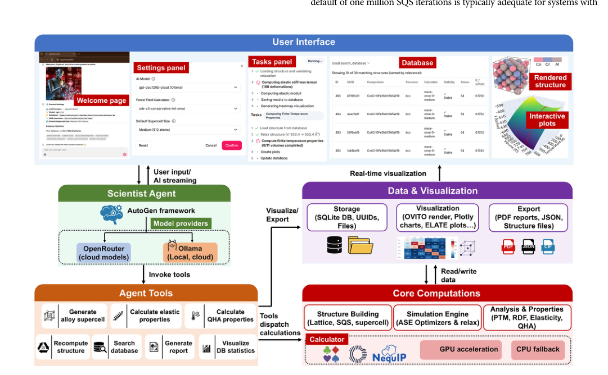
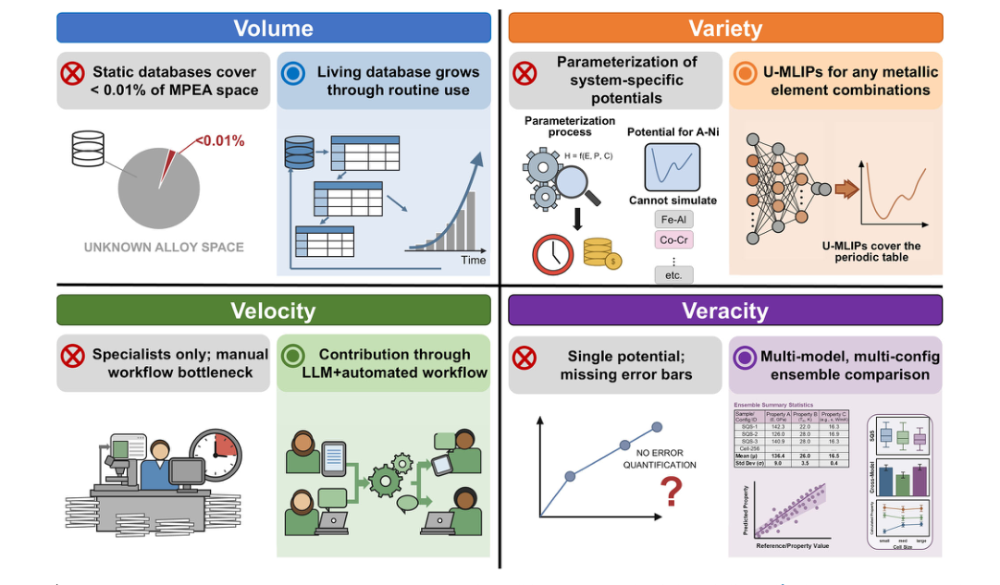
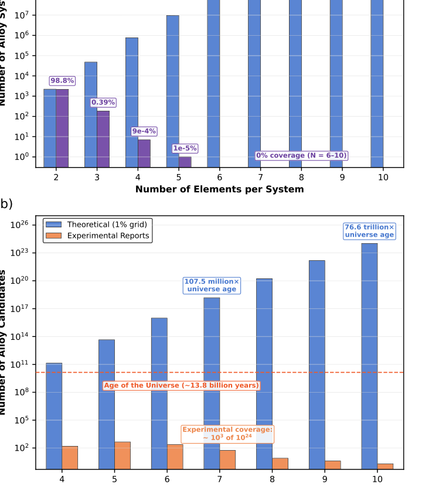
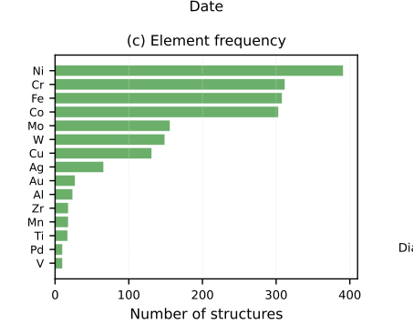
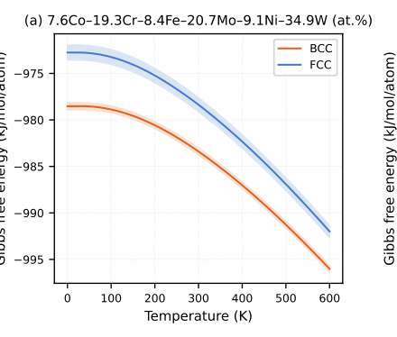
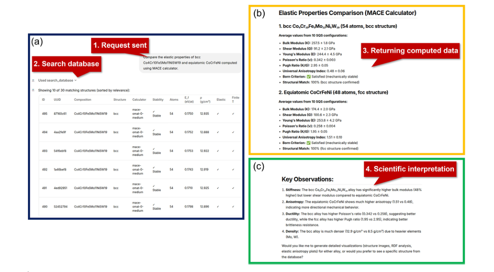

论文资料
OptiMat Alloys: a FAIR-aligned living database of multi-principal element alloys enabled by a conversational agent
已取得公开摘要，图文解读尚未完成
已取得公开摘要，图文解读尚未完成。取得完整资料并通过核验后，这个地址会更新为图文解读。
公开摘要
Existing FAIR materials repositories can only serve pre-computed entries, so broad coverage is perpetually incomplete and cannot adapt to new questions on demand. We present OptiMat Alloys, a large language model-powered conversational agent for multi-principal element alloy exploration. Its central contribution is LLM-based workflow orchestration coupled to a living database : every calculation is performed on demand and persisted automatically with provenance in a local database, so asking a question produces provenance-rich, FAIR-aligned records without a separate deposition step. The agent is accessible through a web interface that requires no programming expertise ( low-barrier accessibility ) and reports uncertainty through cross-potential and cross-configuration validation ( built-in uncertainty quantification ). By coupling foundational machine learning interatomic potentials that cover nearly the entire periodic table with natural-language interaction, OptiMat Alloys enables targeted, on-demand computation guided by the user’s domain knowledge and brings computational alloy screening within reach of any materials scientist.
原图未改动。以下图注来自标注的来源，不据此补写摘要未报告的实验结论。
已取得的论文原图






原文图注与出处
Fig. 1 | The alloy design space dwarfs what is captured in thermodynamic databases and experiments. a Theoretical number of alloy systems grows combinatorially, while Thermo-Calc cover- age collapses beyond ternaries (see Section S1.1). b At 1% granularity, compositional candidates become astronomically large, whereas experimental reports span ~ 1k compositions across 410 elements (see Section S1.2).
Hu, Yang et al.
原文图页 · CC BY 4.0

原文图注与出处
Fig. 3 | Database growth and composition statistics of the OptiMat Alloys living database. The database held 491 structures at the time of writing, accumulated from October 2025 to April 2026. a Cumulative database growth during development and testing, showing bursty accumulation across 54 active days. b Composition com- plexity distribution; 6+ component systems constitute the largest single category
Hu, Yang et al.
原文图页 · CC BY 4.0已取得的论文原图




原文图注与出处
Fig. 5 | OptiMat Alloys interface demonstrating knowledge retrieval from the local database. The user issues a natural-language query requesting comparison of elastic properties between BCC Co4Cr10Fe5Mo11Ni5W19 and equiatomic FCC CoCrFeNi. The agent (a) searches the database for matching entries, (b) retrieves
Hu, Yang et al.
原文图页 · CC BY 4.0